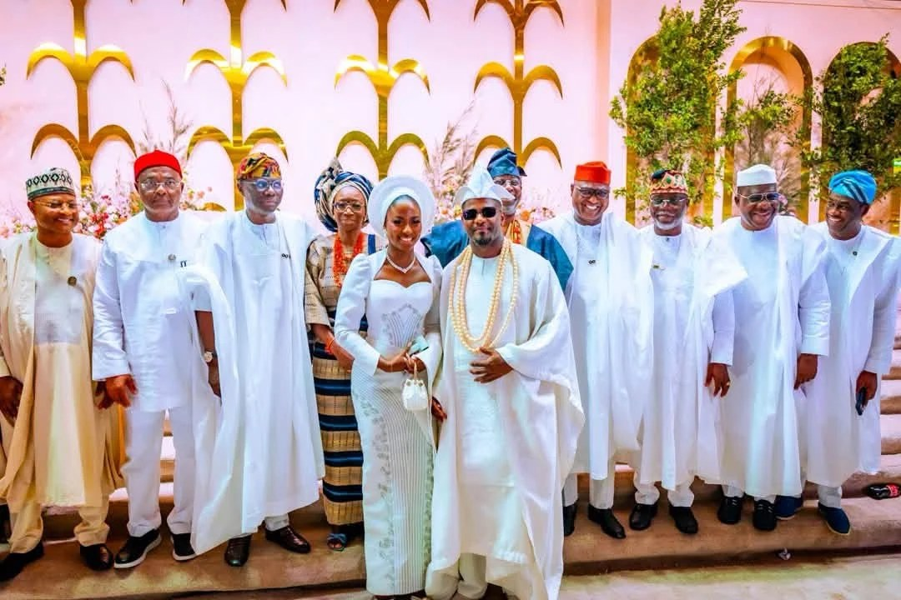

PHOTOS: Dele Alake’s daughter weds in Lagos

Wuraola Alake, daughter of Minister of Solid Minerals Development Dele Alake, married Wasem Yaji at a traditional wedding ceremony in Lagos on Sunday. The event was held at the Eko Convention Centre and drew family members, political leaders and other prominent guests.
Photographs showed the couple wearing traditional outfits and posing together and with attendees. Dele Alake was also seen greeting guests. Among those present were Femi Gbajabiamila, Chief of Staff to the President; Lagos State Governor Babajide Sanwo-Olu and his deputy, Obafemi Hamzat; and Ogun State Governor Dapo Abiodun.
Other state governors at the ceremony included Lucky Aiyedatiwa of Ondo, Biodun Oyebanji of Ekiti, Babagana Zulum of Borno, Uba Sani of Kaduna and Hope Uzodimma of Imo. Attendees also included Deputy President of the Senate Barau Jibrin, former Ogun State Governor Gbenga Daniel and former Ekiti State Governor Niyi Adebayo. Wasem Yaji is the son of the late Nigerian engineer Aloysius Ahile Yaji.
Source: Punch